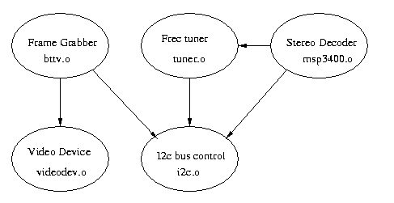
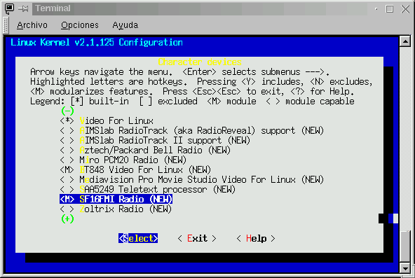
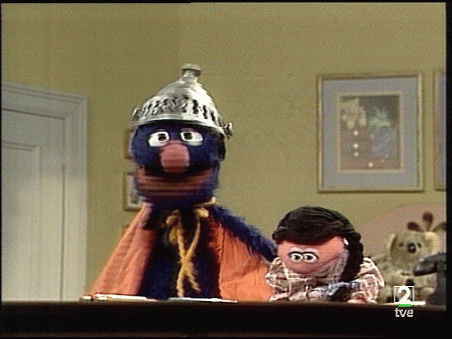
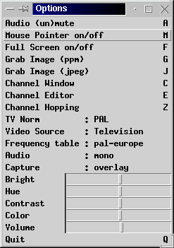

Autor: Juan Antonio Martínez
E-mail: jantonio@dit.upm.es
Se inicia aquí una serie sobre uno de los componentes más novedosos del nuevo kernel de Linux, y que ya está disponible en la serie 2.0.XX: el soporte para dispositivos de vídeo, televisión y radio, conocido como VideoForLinux. En esta entrega se hace una introducción, se señalan los requerimientos y se aprenderán a configurar e instalar los drivers y las aplicaciones. En la segunda entrega se describirá el API y el modelo de programación, así como la implementación VideoForLinux2 del nuevo kernel 2.2.X
Un campo de actualidad e interés en el hardware es el mundo de la multimedia: Tarjetas de videoconferencia, sintonizadores de televisión, procesado digital de la señal... de un tiempo a esta parte los fabricantes de hardware han diseñado multitud de tarjetas para este propósito. Lejos están ya los tiempos en que para poder ver la televisión en el ordenador, había que conectar la salida de la VGA a otra tarjeta especial, que mezclaba la señal de la VGA con la que generaba un receptor de televisión.
Con el advenimiento del bus PCI, y las técnicas de DirectVideo y DirectDraw, las tarjetas de videoconferencia/televisión para PC se han vuelto mucho mas potentes. La calidad de señal es infinitamente mejor: ya no se mezclan señales analógicas, sino que se escribe directamente en la memoria de vídeo. Del mismo modo el procesado digital de la señal recibida se hace posible: compresores/descompresores MPEG, visualizadores de Canal +, posibilidad de grabar vídeo en tiempo real...
El mundo Linux no podía ser menos: En 1996 Ralp y Marcus Metzler idearon una serie de drivers para poder utilizar una tarjeta capturadora de vídeo desde Linux. El primitivo driver, se denominó "bttv" en relación al chip de vídeo que llevaba dicha tarjeta ( el BookTree Bt848 ). Rápidamente, dicho driver evolucionó de manera que se empezaron a soportar diversas tarjetas de vídeo , e incluso sintonizadoras de radio y televisión. Del primitivo driver "bttv" surgió una pléyade de módulos y soporte para diversas tarjetas y combinaciones
Otros autores, a partir del diseño original de "bttv" añadieron soporte a otros dispositivos de vídeo que no estaban basados en el Bt848: cámaras QuickCam, tarjetas basadas en el chipset Zoran ZR36120 , codificadoras MPEG, e incluso soporte de otras arquitecturas, como el Plan-B de Power MacIntosh. Era hora de definir un API estándar y unificado, y de ahí nació el Proyecto VideoForLinux ( v4l en forma abrebiada )
La evolución no se ha detenido. Alan Cox y Linus Torvalds han incluído VideoForLinux como parte integrante de los nuevos kernels 2.2.X, y se ha definido un nuevo estándar: el VideoForLinux2, que incluye diversas mejoras y cambios en el API para poder añadir prestaciones al subsistema de vídeo, así como poder definir nuevos dispositivos multimedia
|
En este artículo vamos a introducir al usuario en la versión VideoForLinux para kernels 2.0.3x, explicando como instalar los módulos, compilar las aplicaciones, y disfrutar de la televisión en la pantalla de nuestro ordenador. En el próximo número de Linux Actual, con el nuevo kernel ya estable, describiremos VideoForLinux2, y se explicará con detenimiento el API, y los drivers y dispositivos soportados.
Vamos a empezar con una descripción de los elementos integrantes del módulo de v4l:
la figura 1 ilustra las dependencias entre los diversos módulos
|  |
| Figura 1: Módulos del driver bttv y sus dependencias |
|---|
Las aplicaciones interactuan con el módulo videodev, que les proporciona información sobre los diversos dispositivos, y de las peculiaridades y posibilidades que ofrece cada uno. A grandes rasgos, se pueden especificar operaciones de:
|
Como conclusión videodev nos proporciona un API unificado para todas las tareas relacionadas con la selección, manejo y adquisición de señales de video, audio, teletexto, o Webcast
Ahora que ya sabemos qué es y qué hace VideoForLinux, vamos a ver los requerimientos del sistema.
|
En el CD-Rom se acompaña una copia de la Home Page de VideoForLinux y del proyecto Bttv. En ellos se detalla una lista completa de los dispositivos soportados, lista que por motivos de espacio no podemos citar aquí.
Hay que hacer notar una excepción a la lista de tarjetas soportadas: las sintonizadoras basadas en el chipset ATI no están soportadas -ni se prevee que lo estén- en Linux, debido a la ceguera mental del fabricante que no publica las especificaciones técnicas de sus productos. Existe una página Web, donde los interesados en que ATI cambie de actitud, pueden firmar
|  |
| Figura 2: Configuración de VideoForlinux en kernel 2.1.125 |
|---|
root@cochito# cd /usr/src root@cochito# tar zxvf <path_al_fichero_en_cdrom>/bttv-0.5.22.tgz root@cochito# cd bttv-0.5.22/driver
root@cochito# cp *.o /lib/modules/current/misc root@cochito# ./MAKEDEV
root@cochito# cp <path_al_fichero_en_cdrom>/v4linux /etc/rc.d/init.d root@cochito# ln -s /etc/rc.d/init.d/v4linux /etc/rc.d/rc3.d/S99v4linux
Una vez instalado el driver llega momento de instalar y probar las aplicaciones
#!/bin/sh
if test "$UID" = "0"; then
# running as root anyway, don't need sudo
INSMOD="/sbin/insmod"
RMMOD="/sbin/rmmod"
else
INSMOD="sudo /sbin/insmod"
RMMOD="sudo /sbin/rmmod"
fi
# handy functions for rmmod/insmod
function xrmmod () {
grep -qe "^$1" /proc/modules || return
echo rmmod $1
$RMMOD $1 || exit 1
}
function xinsmod () {
echo insmod $*
$INSMOD -f $* || exit 1
sleep 1
}
function remove_mods () {
xrmmod bttv
xrmmod msp3400
xrmmod tuner
xrmmod i2c_chardev
xrmmod i2c-dev
xrmmod algo-bit
xrmmod i2c
xrmmod videodev
}
function install_mods () {
#
# Modulo basico
xinsmod videodev
#
# Modulo de control de bus i2c
xinsmod i2c verbose=1 scan=0 i2c_debug=0
#
# Este modulo es opcional. permite un control "tipo caracter" del driver
test -f /lib/modules/current/misc/i2c_chardev.o && xinsmod i2c_chardev
#
# dispositivo de sintonización. Es necesario a menos que se vaya a utilizar
# una entrada de video compuesto o de camara
# argumentos:
# debug=1 Genera mediante syslog mensajes de depuracion
# type=n Especifica el tipo de sintonizador
# 0: Temic PAL tuner
# 1: Philips PAL_I tuner
# 2: Philips NTSC tuner
# 3: Philips SECAM tuner
# 4: no tuner
# 5: Philips PAL tuner
# 6: Temic NTSC tuner
# 7: Temic PAL tuner
xinsmod tuner debug=0
#
# Modulo de control del chip de sonido MPS34XXX.
# Es necesario en la mayor parte
# de las tarjetas que manejan stereo/Nicam
# debug puede valer 0, 1, o 2
xinsmod msp3400 debug=0
#
# Finalmente el modulo bttv.
#
# insmod args:
# remap=adr remap Bt848 memory to adr<<20
# vidmem=base frame buffer address>>20 (of graphic card)
# triton1=0/1 for Triton1 compatibility
# La placa triton 1 se detecta automaticamente
# pero puede ser necesario fijar este valor
# a cero en otras placas base
# pll=0/1/2 Ajuste del oscilador a cristal del PLL
# 0 -> bt848, los demás valores para otros
# chipsets superiores de la familia
# 0: no usar PLL
# 1: oscilador de 28 MHz
# 2: oscilador de 35 MHz
# radio=0/1 La tarjeta soporta receptor de radio
# card=n Tipo de tarjeta
# 0: Auto-Deteccion
# 1: Miro
# 2: Hauppauge
# 3: STB
# 4: Intel
# 5: Diamond
# 6: AVerMedia
# 7: MATRIX Vision MV-Delta
# 8: FlyVideo
# 9: TurboTV
# 10: Hauppauge (usar este en las tarjetas modernas)
#
# remap, card, radio and pll aceptan hasta 4 argumentos, separados por
# comas, para poder poner mas de una tarjeta. Los valores por defecto
# CARD y PLL son los que se definen en el Makefile
#
xinsmod bttv card=1 radio=0
}
case $1 in
start ) install_mods
;;
stop ) remove_mods
;;
restart ) remove_mods
install_mods
;;
status ) a=`cat /proc/modules | grep videodev`
echo -n "Video For Linux modules are"
if [ "$a" = "" ]; then echo -n " NOT"; fi
echo " installed"
;;
* ) echo Usage: $0 [ start | stop | restart | status ]
;;
esac
|
| Listado 1: Programa de arranque de los modulos de VideoForLinux |
|---|
Existen multitud de aplicaciones que permiten el manejo de estos módulos. A título de ejemplo se citan las siguientes:
En el CD-Rom se incluyen algunas de estas aplicaciones. Las demás
-y otras muchas no mencionadas- se pueden encontrar siguiendo los enlaces
indicados en las referencias.
La figura 3 ilustra una simpática imagen capturada desde uno de estos programas
|  |
| Figura 3: Imagen capturada con XawTV |
|---|
Vamos a describir aquí la que a juicio del autor es uno de los mejores programas de visualización de televisión para Linux: el programa XawTV.
XawTV es un conjunto de aplicaciones destinadas a trabajar con sintonizadoras de televisión y de radio. Entre sus capacidades se incluyen:
|
La instalación es realmente sencilla:
# this is a comment # empty lines are ignored too source = television norm = pal # freqtab = pal-bcast-europe # select one that makes it right from: # "vol" "bass" "trebble" synth" "pcm" "speaker" "line" mixer = line fullscreen = 768x576 wm-off-by = -4-24 # for /etc/XF86Config # Modeline "pal" 50.00 768 876 900 1000 576 590 595 630 -hsync -vsync [TVE-1] channel = 49 # key = 1 [TVE-2] channel = 55 # key = 2 [Antena 3] channel = 65 # key = 3 [TeleMadrid] channel = 52 # key = 4 [Tele-5] channel = 59 # key = 5 [Canal Plus] channel = 62 # key = 6 [Canal-7 TV] channel = 35 # key = 7 # more stations follow here [Camera] source = Composite1 # key = 8 |
| Listado 2: Ejemplo de configuración de XawTV |
|---|
Ya tenemos el programa instalado y listo. man xawtv nos proporciona una lista de funciones, menús, y comandos del fichero de configuración. La figura 4 muestra el menú de opciones de XawTV
|  |
| Figura 4: Menú de opciones de XawTV |
|---|
Un último retoque nos permitirá reconfigurar las X, para que XawTV pueda funcionar a pantalla completa: Especificar un "ModeLine" para la resolución de video PAL . Para ello, como root editamos el fichero /etc/X11/XF86Config y en la seccion Monitor , antes de EndSection añadimos la linea:
# For Pal TV decoder Modeline "768x576" 50.00 768 876 900 1000 576 590 595 630 -hsync -vsync
los valores anteriores se ajustan manualmente con "xvidtune" de manera que la pantalla quede centrada correctamente en pantalla.
Del mismo modo en la sección Screen, en el apartado correspondiente a las resoluciones de 16 bits añadimos la opción "768x576"
|
No olvidemos que para poder ver correctamente la señal de tevisión, necesitamos una resolucion de al menos 16 bits en el servidor X. Esto se consigue mediante el comando startx -- -bpp 16
Rizando el rizo podemos crear un usuario "tele" que tenga como login shell el programa "fbtv" ( en los nuevos kernels, o bien un script que arranque las X y el programa xawtv, para los kernels 2.0.3X ), de manera que no haya que hacer login en la máquina para ver la televisión
En función de nuestra configuración, y sobre todo, de la tarjeta de vídeo utilizada pueden presentarse diversos problemas:
En este artículo hemos hecho una presentación del subsistema de gestión multimedia "Video For Linux", describiendo los módulos de que consta, su instalación y alguna de sus aplicaciones. En el proximo número de Linux Actual describiremos el API y el modelo de programación, indicando la interacción con los dispositivos que el nuevo kernel 2.2 soporta, y analizando alguno de los programas que utilizan dichos recursos.
El modelo de programación unificado que nos propone el API de v4linux es muy potente, y es capaz de efectuar una abstracción del hardware de manera que se puede conseguir mucha mayor potencia y flexibilidad a la hora de desarrollar software que con los drivers proporcionados para otros sistemas de todos conocidos, tanto a nivel de control de hardware como de user iterface